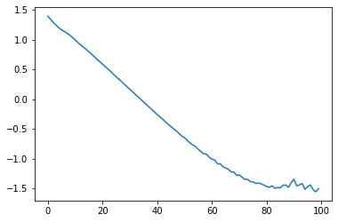

from fastcore.test import *GPFA Learner
Utilities to train and visualize a GPFA model
The first thing that we need is a Learner object to keep track of:
- input data, output data
- model
- likelihood
and that has methods to help with:
- training
- prediction
- visualization
The first thing we need is a training loop, just wrap in a function the example one from GPyTorch
Learner
GPFALearner
GPFALearner (X:torch.Tensor, T:torch.Tensor=None, latent_dims:int=1, model=<class 'gpfa_imputation.gpfa.GPFA'>, var_names=None)
Initialize self. See help(type(self)) for accurate signature.
| Type | Default | Details | |
|---|---|---|---|
| X | Tensor | (n_features * n_obs) Multivariate time series | |
| T | Tensor | None | (n_obs) Vector of time of observations. |
| latent_dims | int | 1 | Number of latent variables in GPFA |
| model | type | GPFA | sub-class of GPFA |
| var_names | NoneType | None | for model info |
# test data
T = torch.arange(0,6)
X = torch.vstack([(torch.arange(0,3, dtype=torch.float32) + 2 + i) * i for i in T])Xtensor([[ 0., 0., 0.],
[ 3., 4., 5.],
[ 8., 10., 12.],
[15., 18., 21.],
[24., 28., 32.],
[35., 40., 45.]])# l for learner
l = GPFALearner(X)test_eq(T, l.T)# with explicit time
test_eq(T, GPFALearner(X, T).T)test_eq(l.n_features, 3)l.Xtensor([-1.0590, -1.0955, -1.1236, -0.8347, -0.8326, -0.8305, -0.4610, -0.4382,
-0.4201, 0.0623, 0.0876, 0.1075, 0.7350, 0.7449, 0.7523, 1.5573,
1.5337, 1.5145])l.train()/home/simone/anaconda3/envs/data-science/lib/python3.10/site-packages/gpytorch/lazy/triangular_lazy_tensor.py:136: UserWarning: torch.triangular_solve is deprecated in favor of torch.linalg.solve_triangularand will be removed in a future PyTorch release.
torch.linalg.solve_triangular has its arguments reversed and does not return a copy of one of the inputs.
X = torch.triangular_solve(B, A).solution
should be replaced with
X = torch.linalg.solve_triangular(A, B). (Triggered internally at ../aten/src/ATen/native/BatchLinearAlgebra.cpp:2183.)
res = torch.triangular_solve(right_tensor, self.evaluate(), upper=self.upper).solution
/home/simone/anaconda3/envs/data-science/lib/python3.10/site-packages/torch/autograd/__init__.py:173: UserWarning: operator() profile_node %840 : int[] = prim::profile_ivalue(%838)
does not have profile information (Triggered internally at ../torch/csrc/jit/codegen/cuda/graph_fuser.cpp:104.)
Variable._execution_engine.run_backward( # Calls into the C++ engine to run the backward passcheck that can train for more than once
l.train()l.lossestensor([ 1.3296, 1.2945, 1.2630, 1.2317, 1.1983, 1.1633, 1.1273, 1.0915,
1.0561, 1.0198, 0.9821, 0.9435, 0.9047, 0.8661, 0.8274, 0.7877,
0.7471, 0.7068, 0.6666, 0.6257, 0.5840, 0.5424, 0.5011, 0.4592,
0.4168, 0.3747, 0.3328, 0.2903, 0.2478, 0.2058, 0.1632, 0.1208,
0.0787, 0.0362, -0.0059, -0.0480, -0.0902, -0.1319, -0.1740, -0.2154,
-0.2572, -0.2983, -0.3392, -0.3799, -0.4211, -0.4619, -0.5016, -0.5415,
-0.5816, -0.6208, -0.6600, -0.6988, -0.7369, -0.7744, -0.8126, -0.8503,
-0.8857, -0.9197, -0.9565, -0.9942, -1.0264, -1.0582, -1.0942, -1.1273,
-1.1544, -1.1754, -1.2033, -1.2374, -1.2625, -1.2955, -1.3143, -1.3451,
-1.3672, -1.3847, -1.4156, -1.4248, -1.4469, -1.4715, -1.4763, -1.4943,
-1.5117, -1.5084, -1.5107, -1.5298, -1.5394, -1.5553, -1.5611, -1.5556,
-1.5822, -1.5848, -1.5757, -1.5974, -1.5959, -1.5997, -1.6132, -1.6039,
-1.6129, -1.6179, -1.6158, -1.6293, -1.6285, 0.1917, -1.5204, -1.2648,
-0.6628, -0.9405, -1.4350, -1.6218, -1.4769, -1.2650, -1.2038, -1.3100,
-1.4713, -1.5763, -1.5778, -1.5071, -1.4330, -1.4128, -1.4546, -1.5237,
-1.5767, -1.5884, -1.5644, -1.5310, -1.5164, -1.5322, -1.5678, -1.6008,
-1.6139, -1.6054, -1.5900, -1.5842, -1.5947, -1.6160, -1.6348, -1.6384,
-1.6304, -1.6230, -1.6268, -1.6393, -1.6516, -1.6559, -1.6522, -1.6476,
-1.6516, -1.6607, -1.6683, -1.6683, -1.6663, -1.6671, -1.6728, -1.6798,
-1.6823, -1.6815, -1.6818, -1.6862, -1.6910, -1.6927, -1.6924, -1.6934,
-1.6969, -1.6997, -1.7004, -1.7005, -1.7014, -1.7046, -1.7057, -1.7060,
-1.7069, -1.7081, -1.7101, -1.7114, -1.7111, -1.7121, -1.7137, -1.7143,
-1.7146, -1.7153, -1.7165, -1.7165, -1.7165, -1.7176, -1.7183, -1.7185,
-1.7185, -1.7195, -1.7197, -1.7202, -1.7204, -1.7209, -1.7210, -1.7213,
-1.7217, -1.7222, -1.7219, -1.7221, -1.7227, -1.7231, -1.7233, -1.7232])Predictions
add a function to get predictions from the model
GPFALearner.predict_raw
GPFALearner.predict_raw (T)
raw_out = l.predict_raw(T)
raw_out/home/simone/anaconda3/envs/data-science/lib/python3.10/site-packages/gpytorch/models/exact_gp.py:273: GPInputWarning: The input matches the stored training data. Did you forget to call model.train()?
warnings.warn(MultivariateNormal(loc: torch.Size([18]))the model prediction is a distribution with len(T)*n_features dimensions
which is in the in the wrong shape and need to be rescaled after the normalization
Also we don’t need th full distribution but only the mean and stddev for each variable at every time step
And we can “fix” the shape by transforming back to a matrix
raw_stddev = raw_out.stddev.reshape(-1, l.n_features)
raw_mean = raw_out.mean.reshape(-1, l.n_features)raw_stddevtensor([[0.0277, 0.0138, 0.0198],
[0.0272, 0.0128, 0.0191],
[0.0270, 0.0125, 0.0189],
[0.0270, 0.0125, 0.0189],
[0.0272, 0.0128, 0.0191],
[0.0277, 0.0138, 0.0198]], grad_fn=<ReshapeAliasBackward0>)This function transforms the raw output of the Gaussian Process (p(X)) into a prediction that can be used. need to do two things:
- take mean and stddev (this is the diagonal of the covariance matrix) for each variable
- reshape so that each row is a time step and each column a variable
- reverse the normalization
the mean and the std are passed individually because in the conditional predictions is not possible to have the whole covariance matrix (and thus a MultiNormal) but the mean and stddev are enough.
GPFALearner.prediction_from_raw
GPFALearner.prediction_from_raw (raw_mean, raw_std)
Takes a raw prediction and produces and final prediction, by reshaping and reversing normalization
# TODO document this function better@patch
def predict(self: GPFALearner, T):
pred_raw = self.predict_raw(T)
return self.prediction_from_raw(pred_raw.mean, pred_raw.stddev)l.predict(T)NormalParameters(mean=tensor([[-0.5299, -0.0512, 0.4296],
[ 3.0692, 4.0439, 5.0183],
[ 8.2873, 9.9780, 11.6701],
[15.3390, 17.9992, 20.6602],
[24.2186, 28.1023, 31.9813],
[34.6174, 39.9281, 45.2374]]), std=tensor([[0.3701, 0.2104, 0.3373],
[0.3641, 0.1952, 0.3262],
[0.3613, 0.1894, 0.3222],
[0.3617, 0.1897, 0.3217],
[0.3638, 0.1954, 0.3260],
[0.3701, 0.2099, 0.3373]]))pred = l.predict(T)pred.mean.shapetorch.Size([6, 3])pred.std.shapetorch.Size([6, 3])Check learning is working
The idea is to use the current model to generate a dataset, that can be for sure modelled using a GPFA (because is the output of GPFA) and then train another model and see if the parameters converge
# create a dummy GPFA with 3 features
Lt = GPFALearner(X)test_params = {
"Lambda": torch.tensor([-1, 0.3, .8]).reshape(Lt.n_features, -1),
"psi": torch.tensor([1e-5, 5e-5, 2e-5]),
}Lt.model.covar_module.initialize(**test_params)GPFAKernel(
(latent_kernels): ModuleList(
(0): RBFKernel(
(raw_lengthscale_constraint): Positive()
)
)
(raw_psi_diag_constraint): Positive()
)Lt.model.covar_module.latent_kernels[0].initialize(lengthscale = torch.tensor(5))RBFKernel(
(raw_lengthscale_constraint): Positive()
)target_X = Lt.predict(T).meanl2 = GPFALearner(target_X)l2.train()l2.predict(T).mean - target_X/home/simone/anaconda3/envs/data-science/lib/python3.10/site-packages/gpytorch/models/exact_gp.py:273: GPInputWarning: The input matches the stored training data. Did you forget to call model.train()?
warnings.warn(tensor([[ 0.0061, 0.0011, 0.0029],
[ 0.0035, 0.0008, 0.0022],
[ 0.0011, 0.0003, 0.0007],
[-0.0012, -0.0003, -0.0009],
[-0.0037, -0.0008, -0.0021],
[-0.0060, -0.0010, -0.0028]])they seems pretty small numbers, so the model is working!
print("Lambda:\n", l2.model.covar_module.Lambda.detach())
print("psi: ", l2.model.covar_module.psi.detach())
print("lengthscale:", l2.model.covar_module.latent_kernels[0].lengthscale.item())Lambda:
tensor([[-1.6125],
[ 1.5892],
[ 1.5900]])
psi: tensor([3.9927e-05, 4.5339e-05, 4.5291e-05])
lengthscale: 5.491497039794922Conditional Predictions
This add the supports for conditional predictions, which means that at the time (t) when we are making the predictions some of the variables have been actually observed. Since the model prediction is a normal distribution we can condition on the observed values and thus improve the predictions.
Therefore we need to compute the conditional distribution of a normal 1
\[ X = \left[\begin{array}{c} x \\ o \end{array} \right] \]
\[ p(X) = N\left(\left[ \begin{array}{c} \mu_x \\ \mu_o \end{array} \right], \left[\begin{array}{cc} \Sigma_{xx} & \Sigma_{xo} \\ \Sigma_{ox} & \Sigma_{oo} \end{array} \right]\right)\]
where \(X\) is a vector of variable that need to predicted and \(o\) is a vector of the variables that have been observed
The mean is in “flat format”, where all the features from one time step are next to each other followed by the features of the next time step.
then
\[p(x|o) = N(\mu_x + \Sigma_{xo}\Sigma_{oo}^{-1}(o - \mu_o), \Sigma_{xx} - \Sigma_{xo}\Sigma_{oo}^{-1}\Sigma_{ox})\]
# example distribution with only 2 variables
μ = torch.tensor([.5, 1.])
Σ = torch.tensor([[1., .5], [.5 ,1.]])
gauss = MultivariateNormal(μ, Σ)
idx = torch.tensor([True, False]) # second variable is the observed one
obs = torch.tensor(5.) # value of second variable
gauss_cond = conditional_guassian(gauss, obs, idx)
# hardcoded values to test that the code is working, see also for alternative implementation https://python.quantecon.org/multivariate_normal.html
test_close(3.25, gauss_cond.mean.item())
test_close(.75, gauss_cond.covariance_matrix.item())Test with multiple variables?
overwrite the predict method to add support for conditional predictions
Need to have the mean and std for both the conditional predictions and the observations, with the same shape and order of the complete prediction.
gauss_cond.covariance_matrixtensor([[0.7500]])merge_pred = _merge_raw_cond_pred(gauss, gauss_cond, obs, idx)
merge_predNormalParameters(mean=tensor([5.0000, 3.2500]), std=tensor([0.0000, 0.8660]))# manually calculated
test_close(merge_pred.mean, torch.tensor([5., 3.25]))
test_close(merge_pred.std, torch.tensor([0., math.sqrt(.75)]))The problem is that the mean and the std for normalization are different for each feature, so in order to have the normalization working it is necessary to give the observations as a 2D array and not like a 1D array (like required by the model)
T_pred = torch.tensor([6, 7])l.predict(T_pred)NormalParameters(mean=tensor([[45.8680, 52.7259, 59.5802],
[57.0317, 65.4239, 73.8126]]), std=tensor([[0.6181, 0.6006, 0.7151],
[1.5100, 1.6784, 1.8967]]))idx = torch.zeros(T_pred.shape[0] * X.shape[1], dtype=torch.bool)
# simulate an observation using sensible numbers from the prediction
idx[[0,2]] = torch.tensor([True, True])
obs = torch.tensor([42., 61.])l._normalize_obs(obs, idx)tensor([2.0806, 2.4525])GPFALearner.predict
GPFALearner.predict (T:torch.Tensor, obs:torch.Tensor=None, idx:torch.Tensor=None)
| Type | Default | Details | |
|---|---|---|---|
| T | Tensor | (n_pred) time where prediction is needed | |
| obs | Tensor | None | (n_obs_pred) Optional - if at the times of the prediction there are some observations array with the values of observations to condition distribution |
| idx | Tensor | None | ((n_pred*n_features)) Optional - necessary if obs are present Boolean array that is True where an observation is present and False where a prediction is needed This is a 1D array with the length equal to n_pred (number time steps to predict) times n_features |
l._normalize_obs(obs, idx)tensor([2.0806, 2.4525])obstensor([42., 61.])l.predict_raw(T_pred).meantensor([2.3697, 2.3701, 2.3692, 3.2042, 3.2048, 3.2036],
grad_fn=<ViewBackward0>)l.predict(T_pred, obs, idx)NormalParameters(mean=tensor([[42.0000, 52.2807, 61.0000],
[55.9377, 64.1794, 72.4175]]), std=tensor([[0.0000, 0.2663, 0.0000],
[0.7358, 0.7527, 0.8781]]))l.predict(T_pred)NormalParameters(mean=tensor([[45.8680, 52.7259, 59.5802],
[57.0317, 65.4239, 73.8126]]), std=tensor([[0.6181, 0.6006, 0.7151],
[1.5100, 1.6784, 1.8967]]))There is a small change in the predicted values after conditioning as you would expect
GPU Support
add support for CUDA to model
# l for learner
l_cuda = GPFALearner(X.cuda())Attrs of interest are:
- T
- X
- likelihood
- model
- norm
cuda() modifies in place the tensors and the modules!
l_cuda.T.cuda()tensor([0, 1, 2, 3, 4, 5], device='cuda:0')l_cuda.T.devicedevice(type='cuda', index=0)@patch
def cuda(self: GPFALearner):
"""Moves all learner to gpu"""
for par in ['T', 'X', 'model', 'likelihood']:
self.__getattribute__(par).cuda()
self.norm.x_mean.cuda()
self.norm.x_std.cuda()GPFALearner.cuda
GPFALearner.cuda ()
Moves all learner to gpu
l_cuda.cuda()parameters are on the gpu!
next(l_cuda.likelihood.parameters()).devicedevice(type='cuda', index=0)gpytorch.distributions.MultivariateNormal(torch.zeros(1).cuda(), torch.ones(1, 1).cuda())MultivariateNormal(loc: tensor([0.], device='cuda:0'), covariance_matrix: tensor([[1.]], device='cuda:0'))l_cuda.model.covar_module.latent_kernels[0].lengthscale.devicedevice(type='cuda', index=0)l_cuda.train()Multi-dimensional latent
l2 = GPFALearner(X, T, latent_dims=2)l2.train()plt.plot(l2.losses)
l2.model.covar_module.LambdaParameter containing:
tensor([[1.6995, 1.0409],
[1.5840, 1.0859],
[1.4720, 1.1650]], requires_grad=True)Saving
load and save models parameters
GPFALearner.load
GPFALearner.load (path:pathlib.Path|str)
GPFALearner.save
GPFALearner.save (path:pathlib.Path|str)
from tempfile import tempdir
p = Path(tempdir) / "model_test.pickle"l.save(p)nl = GPFALearner(X)
nl.model.state_dict()OrderedDict([('likelihood.noise_covar.raw_noise', tensor([0.])),
('likelihood.noise_covar.raw_noise_constraint.lower_bound',
tensor(1.0000e-04)),
('likelihood.noise_covar.raw_noise_constraint.upper_bound',
tensor(inf)),
('covar_module.Lambda',
tensor([[0.9177],
[0.3370],
[0.5760]])),
('covar_module.raw_psi_diag', tensor([0., 0., 0.])),
('covar_module.latent_kernels.0.raw_lengthscale', tensor([[0.]])),
('covar_module.latent_kernels.0.raw_lengthscale_constraint.lower_bound',
tensor(0.)),
('covar_module.latent_kernels.0.raw_lengthscale_constraint.upper_bound',
tensor(inf)),
('covar_module.raw_psi_diag_constraint.lower_bound', tensor(0.)),
('covar_module.raw_psi_diag_constraint.upper_bound',
tensor(inf))])nl.load(p)
nl.model.state_dict()OrderedDict([('likelihood.noise_covar.raw_noise', tensor([-11.0793])),
('likelihood.noise_covar.raw_noise_constraint.lower_bound',
tensor(1.0000e-04)),
('likelihood.noise_covar.raw_noise_constraint.upper_bound',
tensor(inf)),
('covar_module.Lambda',
tensor([[2.2641],
[2.2645],
[2.2637]])),
('covar_module.raw_psi_diag',
tensor([ -7.4571, -13.0640, -8.5047])),
('covar_module.latent_kernels.0.raw_lengthscale',
tensor([[5.6052]])),
('covar_module.latent_kernels.0.raw_lengthscale_constraint.lower_bound',
tensor(0.)),
('covar_module.latent_kernels.0.raw_lengthscale_constraint.upper_bound',
tensor(inf)),
('covar_module.raw_psi_diag_constraint.lower_bound', tensor(0.)),
('covar_module.raw_psi_diag_constraint.upper_bound',
tensor(inf))])Plot learning progress
l = GPFALearner(X, var_names=['x0', 'x1', 'x2'])
l.train()GPFALearner.plot_progress
GPFALearner.plot_progress (size={'width': 250, 'height': 120})
l.plot_progress()/home/simone/.local/lib/python3.10/site-packages/altair/utils/core.py:317: FutureWarning: iteritems is deprecated and will be removed in a future version. Use .items instead.
for col_name, dtype in df.dtypes.iteritems():self = l
v =[]
for info_name in self.model_infos[0].keys():
values = pd.concat([info[info_name].assign(n_iter=i) for i, info in enumerate(self.model_infos)])
v.append(values)v[ variable z0 n_iter
0 x0 0.538574 0
1 x1 0.298168 0
2 x2 0.833378 0
0 x0 0.638574 1
1 x1 0.398168 1
.. ... ... ...
1 x1 2.144966 98
2 x2 2.145648 98
0 x0 2.142248 99
1 x1 2.142784 99
2 x2 2.149678 99
[300 rows x 3 columns],
latent lengthscale n_iter
0 z0 0.693147 0
0 z0 0.744397 1
0 z0 0.798212 2
0 z0 0.854631 3
0 z0 0.913641 4
.. ... ... ...
0 z0 5.219249 95
0 z0 5.233388 96
0 z0 5.247562 97
0 z0 5.261695 98
0 z0 5.275766 99
[100 rows x 3 columns],
variable psi n_iter
0 x0 0.693147 0
1 x1 0.693147 0
2 x2 0.693147 0
0 x0 0.644397 1
1 x1 0.644397 1
.. ... ... ...
1 x1 0.000064 98
2 x2 0.000170 98
0 x0 0.000292 99
1 x1 0.000061 99
2 x2 0.000169 99
[300 rows x 3 columns],
noise n_iter
0 0.693247 0
0 0.644497 1
0 0.598182 2
0 0.554272 3
0 0.512741 4
.. ... ...
0 0.000238 95
0 0.000233 96
0 0.000228 97
0 0.000223 98
0 0.000219 99
[100 rows x 2 columns]]Export
Printing
Other
# #| exporti
# def get_parameter_value(name, param, constraint):
# if constraint is not None:
# value = constraint.transform(param.data.detach())
# name = name.replace("raw_", "") # parameter is not raw anymore
# else:
# value = param.data.detach()
# return (name, value)
# name = "covar_module.psi"
# test_eq(l.model.covar_module.psi.detach(), get_parameter_value(name, l.model.covar_module.raw_psi_diag, l.model.covar_module.raw_psi_diag_constraint)[1])
# #| exporti
# def tensor_to_first_item(tensor):
# if tensor.dim() > 0:
# return tensor_to_first_item(tensor[0])
# return tensor.item()
# def format_parameter(name, value):
# value = tensor_to_first_item(value)
# name = name.split(".")[-1] # get only last part of name
# return f"{name}: {value:.3f}"
# #| export
# @patch
# def get_formatted_params(self: GPFALearner):
# return ", ".join([
# format_parameter(*get_parameter_value(name, value, constraint))
# for name, value, constraint in
# self.model.named_parameters_and_constraints()
# ])
# l.get_formatted_params()
# # this is not really working at the moment, but it's not important
# @patch
# def plot_loss_printer(self: GPFALearner, i_iter):
# if i_iter ==0: return
# x = torch.arange(0, i_iter)
# y = self.losses[:i_iter]
# plot_data = [[x, y]]
# self.pb.update_graph(plot_data)
# x_bounds = [x.min(), x.max()+1]
# y_bounds = [y.min(), y.max()]
# self.pb.names = ["Training loss"]
# #|export
# @patch
# def printer(self: GPFALearner, i_iter):
# if i_iter%10 == 0:
# update_str = f"loss: {self.losses[i_iter].item():.3f}, " + self.get_formatted_params()
# #self.plot_loss(i_iter)
# #self.pb.write(update_str)
# l.train(lr = 0.01)
# import matplotlib.pyplot as plt
# plt.plot(l.losses)Footnotes
https://cs.nyu.edu/~roweis/notes/gaussid.pdf eq, 5a, 5d↩︎